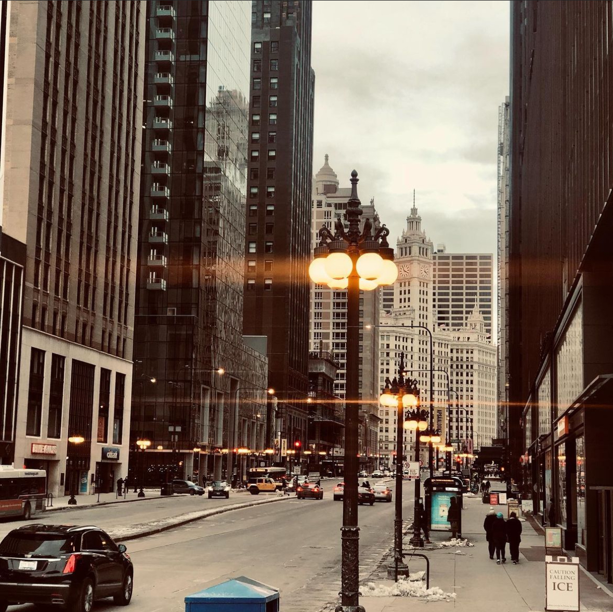
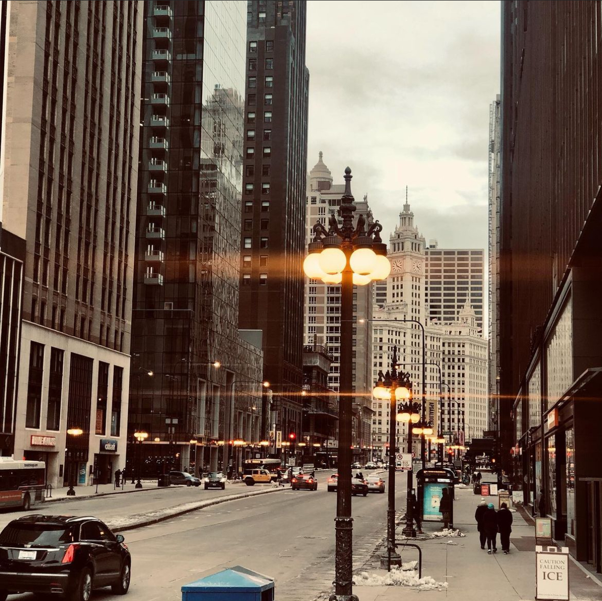

Photography
Photography is a passion of mine whenever I venture out, eagerly capturing moments that resonate with me. Each photograph holds within it a multitude of memories, each frame unfolding narratives of specific moments or days. It's this ability of a single image to encapsulate numerous stories that deeply resonates with me, fueling my love and fascination for the art of photography.
 
